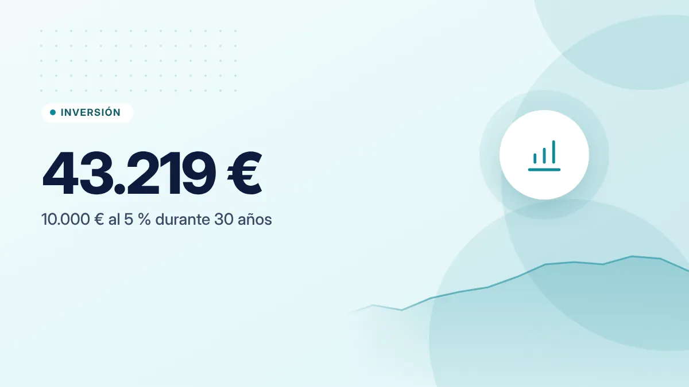
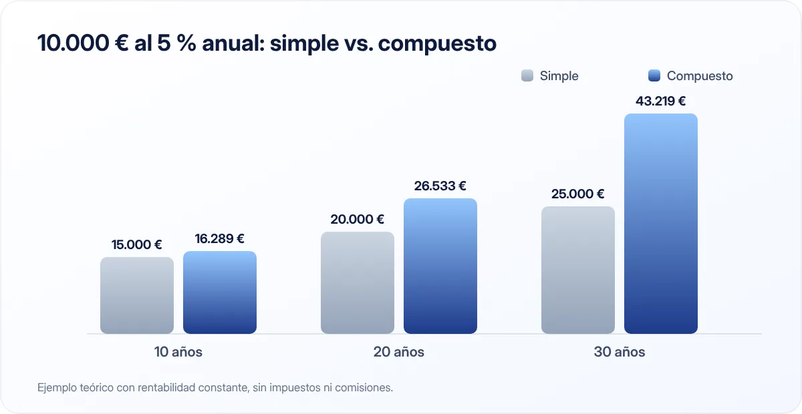

El interés compuesto explicado con ejemplos (y por qué empezar pronto importa tanto)
Es el concepto financiero más poderoso y, a la vez, el más ignorado. Entenderlo cambia la forma en que ves el ahorro, la inversión y las deudas.

Puntos clave
- El interés compuesto genera intereses sobre los intereses ya ganados.
- Su efecto depende sobre todo del tiempo: empezar diez años antes puede casi duplicar el resultado.
- Funciona igual en contra cuando tienes deudas.
Interés simple vs. interés compuesto
Con interés simple, solo generas intereses sobre la cantidad inicial. Si inviertes 10.000 € al 5 % anual, ganas 500 € cada año, siempre lo mismo.
Con interés compuesto, los intereses de cada año se suman al capital, y el año siguiente generas intereses sobre una cantidad mayor. El primer año ganas 500 €; el segundo, 525 €; el tercero, 551 €… y así sucesivamente.
La diferencia parece pequeña al principio, pero con el tiempo se vuelve enorme.
Un ejemplo a 30 años

10.000 € al 5 % anual, sin añadir nada más:
| Años | Interés simple | Interés compuesto |
|---|---|---|
| 10 | 15.000 € | 16.289 € |
| 20 | 20.000 € | 26.533 € |
| 30 | 25.000 € | 43.219 € |
A los 30 años, el interés compuesto ha generado más del doble de ganancias que el simple: 33.219 € frente a 15.000 €.
Ejemplo teórico con una rentabilidad constante del 5 %, sin impuestos ni comisiones. En la realidad, las rentabilidades varían cada año y pueden ser negativas.
Con aportaciones mensuales
La mayoría de la gente no tiene 10.000 € para empezar, pero sí puede ahorrar una cantidad cada mes. Veamos qué pasa si aportas 100 € al mes con una rentabilidad del 5 % anual:
| Años | Total aportado | Valor final aproximado |
|---|---|---|
| 10 | 12.000 € | 15.528 € |
| 20 | 24.000 € | 41.103 € |
| 30 | 36.000 € | 83.226 € |
A los 30 años, más de la mitad del resultado no lo has puesto tú: lo han generado los intereses.
El factor más importante: el tiempo
Compara a dos personas que aportan 150 € al mes al 5 % hasta los 65 años:
- Ana empieza a los 25: aporta durante 40 años, 72.000 € en total. Llega a unos 228.900 €.
- Luis empieza a los 35: aporta durante 30 años, 54.000 € en total. Llega a unos 124.800 €.
Ana ha aportado solo 18.000 € más que Luis, pero termina con más de 100.000 € de diferencia. Esos diez años extra de crecimiento compuesto son los que marcan la diferencia.
No hace falta empezar con mucho. Hace falta empezar pronto y ser constante.
La regla del 72
Es un atajo mental para saber cuánto tarda en duplicarse una cantidad: divide 72 entre el tipo de interés anual.
- Al 3 %: 72 ÷ 3 = 24 años.
- Al 6 %: 72 ÷ 6 = 12 años.
- Al 9 %: 72 ÷ 9 = 8 años.
Es una aproximación, pero bastante precisa para tipos entre el 2 % y el 10 %.
Cuando el interés compuesto juega en contra
El mismo mecanismo funciona con las deudas. Si no pagas los intereses de una tarjeta de crédito, se suman a lo que debes y generan nuevos intereses. Con un 20 % anual, según la regla del 72, una deuda que no amortizas se duplica en unos 3,6 años.
Por eso, antes de pensar en invertir, conviene liquidar las deudas caras.
Los enemigos del interés compuesto
- Las comisiones. Un 1 % o 1,5 % anual de comisión parece poco, pero se descuenta cada año y también se "compone". Lo vemos en detalle en nuestra guía de fondos indexados.
- La inflación. Si tu dinero crece al 2 % y los precios suben al 3 %, pierdes poder adquisitivo. Más en inflación y ahorros.
- Sacar el dinero antes de tiempo. Interrumpir el crecimiento hace que pierdas los años más productivos, que son los últimos.
Rentabilidad y riesgo
Los ejemplos de este artículo usan un 5 % constante para que se entienda el concepto. En la vida real:
- Las cuentas y depósitos ofrecen rentabilidades bajas pero sin riesgo de perder capital (dentro de los límites del fondo de garantía).
- Los productos con mayor rentabilidad esperada, como la renta variable, tienen también mayor riesgo: su valor puede bajar, a veces mucho, y las rentabilidades pasadas no garantizan las futuras.
Antes de invertir, asegúrate de tener un fondo de emergencia y de entender bien en qué inviertes.
En resumen
El interés compuesto hace que tu dinero genere dinero, y ese dinero genere más dinero. Su gran aliado es el tiempo; sus enemigos, las comisiones, la inflación y las deudas caras. Empieza pronto, aunque sea con poco.
Fuentes consultadas
Este artículo es informativo y no constituye asesoramiento financiero, fiscal ni jurídico personalizado. Las cifras son orientativas y pueden cambiar; consulta las fuentes oficiales y, si lo necesitas, a un profesional. Cómo elaboramos nuestras guías.